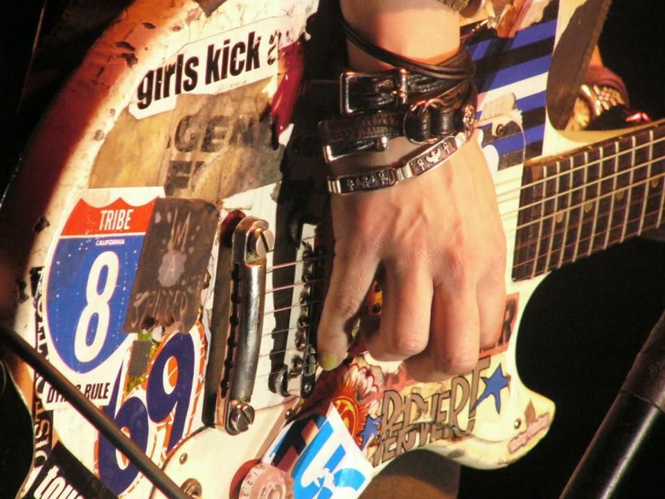

1970–1980
Chegada das influências internacionais e formação das primeiras bandas brasileiras.
Atitude, rebeldia e resistência: a música como instrumento de transformação social.
EXPLORAR MOVIMENTOO movimento punk brasileiro começou a ganhar força no final da década de 1970, principalmente em São Paulo e na região do ABC paulista. Inspirado pelo punk rock inglês e norte-americano, o movimento chegou ao Brasil em um período marcado pela ditadura militar, desigualdade social e falta de liberdade política.
Os jovens utilizavam a música, a moda e o comportamento como formas de contestação. O punk defendia a atitude independente, a liberdade de expressão e a crítica às injustiças sociais.
Chegada das influências internacionais e formação das primeiras bandas brasileiras.
Lançamento de Grito Suburbano, coletânea considerada um marco do punk paulista.
O punk continua influenciando bandas independentes, movimentos sociais e a cultura alternativa.
Formada em São Paulo em 1981, tornou-se uma das bandas mais importantes do punk e hardcore brasileiro.
Obra: Crucificados pelo Sistema (1984).
Conhecida por abordar questões sociais, paz e direitos humanos.
Obra: Pela Paz em Todo Mundo (1986).
Uma das bandas pioneiras do punk paulista, com letras de crítica social e política.
Obra: Miséria e Fome (1983).
Banda que utilizou humor e crítica política para retratar problemas sociais.
Obra: Mais Podres do que Nunca (1985).
A estética punk é marcada por roupas rasgadas, jaquetas de couro, coturnos, cabelos coloridos e acessórios personalizados. O estilo representa independência e contestação dos padrões sociais.


O punk está presente em festivais independentes, encontros de bandas, feiras de discos, eventos alternativos e apresentações em casas de shows.